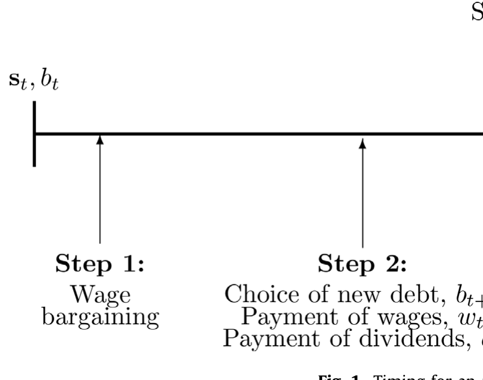
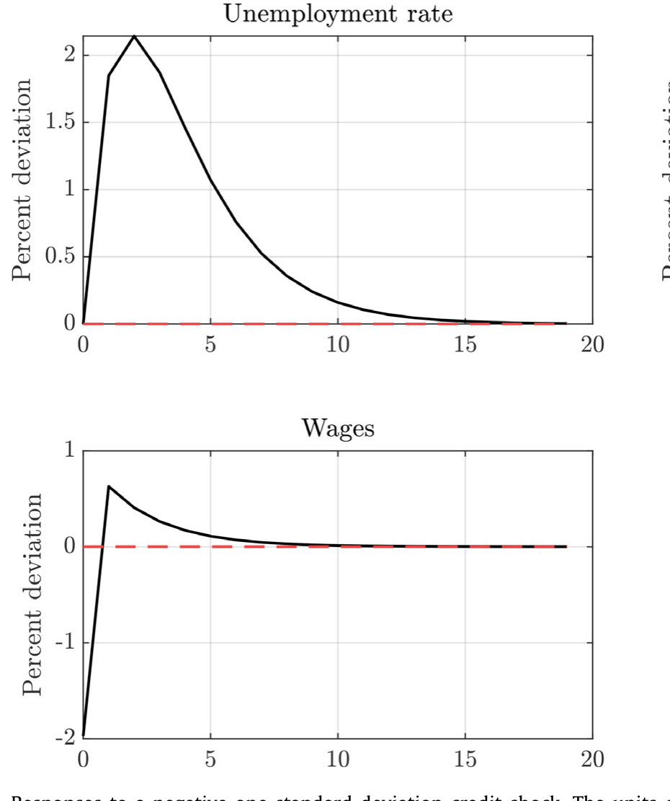
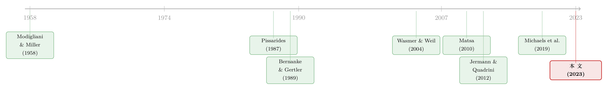

债，竟成了老板谈判桌上的底牌——重读「债务谈判渠道」与失业
本文读的是 Monacelli, Quadrini & Trigari (2023, Journal of Financial Economics)：他们提出并量化了一条新的「债务谈判渠道」——企业借债的真正动机，未必是为了凑钱去招人，而是因为「身上背着债」能在工资谈判中压低工人的索价，从而更愿意招人。结构估计显示，这条渠道解释了美国约 26% 的失业波动。
1 一个反直觉的问题：负债的公司，为什么更敢招人？
先抛一个让人犯嘀咕的现象。
在传统宏观金融的叙事里，债务和就业的关系是这样的：信贷一收紧，企业要么缺钱、要么融资成本飙升，于是被迫砍掉投资、停止招聘。这就是我们耳熟能详的 信贷渠道 (credit channel)——从 Bernanke and Gertler (1989) 到 Kiyotaki and Moore (1997)，再到后面浩浩荡荡的宏观金融文献，讲的都是同一件事：信贷影响的是企业「有没有能力」去招人。钱不够，自然招不动。
但本文三位作者（Monacelli、Quadrini、Trigari）盯上了另一种可能。他们问：会不会有这样一种情形——企业借钱，根本不是为了凑出招人的工资款，而是借钱这个动作本身改变了它和工人讨价还价时的位置？
听上去有点绕，我们换个生活化的说法。一家公司账上背着一屁股债，老板坐到谈判桌前，可以理直气壮地对工人说：「不是我不想多给，是我得先还债啊。」于是工人能从这家公司身上「榨」出来的剩余就少了，工资被压低了。而工资一旦压低，雇一个工人对老板来说就更划算——于是它反而更有动力去招人。
一句话点破：信贷影响的不是招人的「能力 (ability)」，而是招人的「意愿 (willingness)」。这就是本文的核心——债务谈判渠道 (debt bargaining channel)。
这是一个典型的「破坏 Modigliani–Miller」的故事。在 MM (1958) 的世界里，企业的资本结构无关紧要，借不借债不影响实体决策。可一旦工资是「谈」出来的，债务就有了一个全新的用途：它是老板手里的一张谈判底牌。借得越多，底牌越硬，工资压得越低，招人的胃口就越大。
接着，一个自然的问题是：这条听上去挺机灵的渠道，在宏观上到底重不重要？它能解释多少失业的起起落落？这正是这篇论文要回答的。
2 模型：把「谈判底牌」写进一个搜寻匹配框架
要把这个直觉量化，作者借用了劳动经济学里最经典的骨架——Pissarides (1987) 的 搜寻匹配模型 (search and matching model)：失业的工人和空缺的岗位在市场上随机相遇，配对成功就形成一家「企业」，开始生产，直到以外生概率 \(\lambda\) 分手。作者在这副骨架上加了两样东西：有限执行下的借债 (borrowing under limited enforcement)，以及一个直接冲击企业借债约束的金融冲击。
2.1 谁在做决策，按什么顺序
模型里有工人和企业。工人风险中性，持有债券和企业股权。一个关键的技术设定是：债券给工人提供一个 便利收益 (convenience yield) \(\nu_{t+1}\)，于是工人持债的欧拉方程是
$$1 = \beta_t\,(1 + r_t + \nu_{t+1})$$
作者令 \(\nu_{t+1} = 1/\beta_t - 1 - r\)，代入后恰好得到 \(r_t = r\) —— 均衡利率是常数，而股权的预期回报 \(\beta_t\) 是时变的。这个安排很巧：它让模型里「实际利率很平、股权溢价却高度顺周期」，和数据相符。
企业这一边，时序是整个模型的灵魂（如图 1 所示）。一家新企业在张贴空缺、付出招聘成本 \(\kappa\) 时就先把债 \(b_{t+1}\) 定下来；匹配成功后，到了下一期，它带着这笔预先定好的债走上谈判桌。每一期被拆成三步：(i) 工资谈判，(ii) 融资决策，(iii) 违约重谈。

Figure 1: Timing for an
为什么这个顺序至关重要？因为它保证了：工人在谈判时，企业身上的债是「既成事实」。作者特别强调，在位企业的决策时序其实无关紧要——真正要紧的，是新企业（那些正在张贴空缺、创造新岗位的企业）带着一笔预先承诺的债进入第一次谈判。这一笔债，就是老板的底牌。
2.2 企业的问题与那条「会咬人」的约束
给定工资函数 \(w_t = g(s_t; b_t)\)，企业选择新债 \(b_{t+1}\) 来最大化股权价值。这是整个模型最核心的方程，我们把它逐块拆开看：
这个最大化要受一条 执行约束 (enforcement constraint) 的限制——因为借债是「有限执行」的，企业随时可能赖账，债权人只能按企业价值的一个比例 \(\phi_t\) 借给它：
$$\frac{b_{t+1}}{1+r} \le \phi_t\,\beta_t\,\mathbb{E}_t\,J(s_{t+1};b_{t+1})$$
这里的 \(\phi_t\) 就是那个金融冲击的载体——它直接松紧企业的借债能力。\(\phi_t\) 一降，借债上限就收紧，这是「外生」的信贷变化；而其他冲击（生产率、贴现因子、匹配效率）也会通过企业价值 \(J\) 内生地改变这个上限，形成放大机制。
然后是第一个漂亮的结果。由于工资 \(w_t\) 和旧债 \(b_t\) 在目标函数里是可加地进入的，作者证明了：
Lemma 1：最优的新债 \(b_{t+1}\) 与旧债 \(b_t\) 和当期工资 \(w_t\) 无关。
这条引理看似技术，却极大地简化了后面的谈判分析——企业选债时不必去操心当期谈判的结果。
2.3 谈判：剩余怎么分，债怎么压低工资
谈判用的是经典的 纳什议价 (Nash bargaining)：工人拿走议价剩余 \(S\) 的份额 \(\eta\)，企业拿走 \(1-\eta\)。由此得到
$$J(s_t;b_t) = (1-\eta)\,S(s_t;b_t), \qquad W(s_t;b_t) - U(s_t) = \eta\,S(s_t;b_t)$$
而议价剩余 \(S\) 满足
$$S(s_t;b_t) = z_t - a - b_t + \frac{b_{t+1}}{R} + (1-\lambda)\beta_t\,\mathbb{E}_t\,S(s_{t+1};b_{t+1}) - \eta\,p_t\,\beta_t\,\mathbb{E}_t\,S(s_{t+1};B_{t+1})$$
注意这里旧债 \(b_t\) 是直接减项，于是
$$\frac{\partial S(s_t;b_t)}{\partial b_t} = -1$$
这一步 (\(\partial S/\partial b_t = -1\)) 是整篇文章的「数学心脏」：每多背一块钱的债，谈判剩余就少一块钱。 剩余少了，工人能分到的那一份 \(\eta S\) 自然也少。把所有这些组合起来，作者推出了均衡工资（论文式 15）的结构：
$$w_t = \eta\,(z_t - b_t) + (1-\eta)\,a + \eta\,\Theta_t$$
其中第三项 \(\Theta_t\) 是标准搜寻模型里与劳动力市场紧张度、空缺成本 \(\kappa\) 相关的项（其具体形式见原文，这里不展开）。真正点睛的是前两项：工人拿到的不再是产出 \(z_t\) 的一个固定份额 \(\eta\)，而是产出「净掉债务」之后的份额 \(\eta(z_t - b_t)\)。
换句话说——多背一块钱债，对工资的压低效果，和少生产一块钱产出是一样的。债务，在工资公式里扮演了一个「负的生产率」。借得越多，工人的工资越低；工资越低，招人越划算。债务谈判渠道，至此被完整地写进了方程。
2.4 为什么企业总会借满？
有了 \(\partial S/\partial b_t = -1\)，企业借债的一阶条件（论文式 12）可以写成
$$1 - (1-\eta)(1+r)\beta_t = \mu_t\,\big[\,1 + \phi_t\,(1-\eta)(1+r)\beta_t\,\big]$$
其中 \((1-\lambda)\mu_t\) 是执行约束的拉格朗日乘子。作者由此证明：
Lemma 2：只要工人有正的议价权（\(\eta \in (0,1)\)），执行约束永远紧绑——企业总是借到上限。
直觉在 \((1+r)\beta_t = 1\) 这个特例下最清楚：此时一阶条件变成 \(\eta = \mu_t[\,1+(1-\eta)\phi_t\,]\)，只要 \(\eta>0\)，乘子 \(\mu_t\) 就必然为正。也就是说，只要工人有议价权，企业就有动机借满——这正是债务谈判渠道在驱动它。而当 \(\eta = 0\) 时，工资完全由工人的外部选项决定，借债毫无好处，MM 的无关性又回来了。债务的价值，完全寄生在「工资是谈出来的」这件事上。
最后，自由进入条件（论文式 14）\(\,b_{t+1}/(1+r) + (1-\eta)\beta_t\mathbb{E}_t S(s_{t+1};b_{t+1}) = \kappa\,\) 把企业数目钉死，整个一般均衡就闭合了。
3 量化：这条渠道，到底解释了多少失业波动？
写出一个机灵的模型是一回事，证明它在宏观上要紧是另一回事。这一步才是真正关键的。
作者用 贝叶斯方法 (Bayesian methods) 对模型做了结构估计，把搜寻摩擦、议价、执行约束的参数，连同四种冲击——信贷冲击 \(\phi_t\)、生产率冲击 \(z_t\)、贴现因子冲击 \(\beta_t\)、匹配冲击 \(\xi_t\)——的随机性质一并估出来，样本覆盖始于 1980 年代中期的美国数据。
结论掷地有声：债务谈判渠道贡献了约 26% 的美国失业波动。

Figure 2: Responses to a negative one standard deviation credit shock. The units
怎么理解这个 26%？作者的做法是把模型里的债务谈判机制「关掉」，看失业波动会塌掉多少。一个负向信贷冲击（\(\phi_t\) 下降）会收紧借债上限，企业手里的「谈判底牌」变软，于是它压低工资的能力下降、招人意愿萎缩、失业上升（图 2 是负向信贷冲击的脉冲响应）。而其余四分之三的波动，仍由生产率等传统力量主导——所以这条渠道不是「包打天下」，但 26% 已经足够说明：资本市场的松紧，是通过工人的工资单，实实在在地传导到了就业上的。
4 走到微观：用 Compustat 给理论做一次「体检」
到这里，怀疑者会说：26% 是模型算出来的，模型本身的假设可信吗？
作者于是把战场搬到了微观，用 Compustat 的企业层面数据做面板回归，去检验模型最尖锐的一个预言：
就业与债务之间的正相关，应当在雇佣议价权更高的工人的企业里更强。
逻辑很顺：如果债务真的是靠「压低工资」来刺激招人，那么在工人议价权 \(\eta\) 越高、压低工资的空间越大的地方，「债增→就业增」的弹性就该越大。回归结果与这一预言一致——企业层面的就业增长与债务增长正相关，而且这种正相关随着工人议价权的代理变量上升而增强。微观证据，给宏观模型背了书。
这一步的价值，不在于它给出了一个多大的系数，而在于它把一个「黑箱式」的结构估计，落到了一个可以被企业数据直接检验的、有方向性的预言上。理论的内在机制，因此变得可证伪。
5 文献脉络：从「资本结构无关」到「债务是谈判武器」
退后一步看，这篇论文坐在两条研究河流的交汇处。
第一条河，是公司金融里「债务作为谈判工具」的传统。源头可以追到 MM (1958) 的资本结构无关定理——正是这个被「打破」的基准，才让后来的故事有了意义。Dasgupta and Sengupta (1993) 与 Perotti and Spier (1993) 最早把财务杠杆当成削弱工人议价权的战略工具写进模型；随后一大批实证跟进：Bronars and Deere (1991) 发现杠杆与工会化程度正相关，Matsa (2010) 发现议价权高的企业资本结构更偏债，Benmelech et al. (2012) 用航空业数据证明陷入财务困境的企业能从劳工那里榨出更好的条件，Michaels et al. (2019) 则用面板数据记录了工资与杠杆的负相关。这些研究都在说同一件事：工人的议价权，是企业财务结构的一个重要决定因素。

第二条河，是宏观里「金融摩擦 + 搜寻匹配」的传统。Pissarides (1987) 给了搜寻匹配的骨架；Cooley and Quadrini (1999)、Wasmer and Weil (2004)、Petrosky-Nadeau (2014) 都把某种金融机制塞进搜寻模型，但它们形式化的都是信贷渠道——融资成本上升、张贴空缺的意愿下降。Jermann and Quadrini (2012) 则把金融冲击和劳动力市场动态连了起来。
本文的位置，恰好在两条河的合流处：它把第一条河的微观洞见（债务是谈判武器），用第二条河的宏观语言（搜寻匹配 + 一般均衡 + 结构估计）说了出来，并第一次回答了那个悬而未决的问题——议价渠道，对失业的「总量」动态到底重不重要？ 答案是 26%。
（关于「财务韧性如何影响劳资谈判」这条线，本博客此前评述过一篇直接相关的论文，见《谈判桌上的「耗得起」：企业如何为一场罢工提前备好财务韧性》。）
6 评论与延伸（Q&A + 研究方向）
(a) 几个可能的疑问
Q：债务谈判渠道和传统的信贷渠道，到底差在哪？
差在「钱」的作用。信贷渠道里，借债是为了凑出招人/投资的资金，缺钱就招不动，影响的是「能力」。债务谈判渠道里，借债本身改变了谈判位置，让企业更愿意招人，影响的是「意愿」——哪怕企业根本不缺招人的钱，它也有借债的动机。本文模型里企业「即使没有融资需求也偏好发债」，正是这一点的体现。
Q：「企业总是借满上限」这个 Lemma 2 太强了吧？现实里企业会留缓冲。
作者自己也承认这一点（2.2 节）。现实中企业不会用尽全部借债能力、会留 buffer。但他们论证，即便企业平时不借满，借债上限的放松仍会改变招人激励——驱动结果的是约束的「松紧变化」，而非是否恰好顶到上限。这是一个为了可解性做的简化，方向上不影响机制。
Q：26% 是怎么得到的，可信吗？
它来自贝叶斯结构估计后的一个反事实：关掉债务谈判机制，失业波动会塌掉约四分之一。它的可信度取决于模型设定和先验。好在作者没有让这个数字「孤悬」——他们用 Compustat 微观回归去验证模型那条「议价权越高、债-就业弹性越大」的预言，给宏观数字提供了独立的、方向性的支撑。
Q：利率在模型里是常数，这会不会把信贷渠道人为地「关掉」了，从而夸大谈判渠道？
这是个要紧的担忧。作者通过便利收益的设定让 \(r_t = r\) 恒定，目的是匹配「实际利率平、股权溢价顺周期」的事实。好处是它干净地隔离出谈判渠道；代价是，传统信贷渠道里「融资成本顺周期上升」的那一部分被压平了。所以 26% 更应被读作「在剥离了利率波动之后，谈判渠道单独的贡献」，而非它在一个利率内生世界里的份额。
Q：为什么债不优先于工资？这个假设要紧吗？
很要紧。模型里违约发生在期末、工资支付之后，而工资谈判发生在生产之前——此时企业还不欠任何工资。如果债优先于工资，老板「我得先还债」的说辞就更硬，机制只会更强。作者选择了一个偏保守的时序，让债并不天然压过工资，结果仍能得到 26%，反而让结论更稳。
Q：这对「失业波动之谜」（Shimer puzzle）有什么含义？
Shimer (2005) 指出标准搜寻模型产生的失业波动太小。本文的债务谈判渠道提供了一个新的放大器：金融冲击通过企业价值内生地收紧借债上限，再通过工资传导到招聘，等于在生产率之外多了一条放大失业波动的通道。它不取代 Hagedorn and Manovskii (2008)、Hall (2017) 那类「小剩余」机制，而是与之互补。
(b) 几个可能的研究问题与提案
1. 把债务谈判渠道搬到公司债市场的「持有人结构」上
【经济故事】本文里债的作用是压低工资，但谁持有这笔债、债的久期与契约条款如何，可能改变老板「我得先还债」这张底牌的硬度。比如，被外资或被动指数大量持有的债，重谈成本更高，谈判底牌或许更硬。 【可行性】中。需要把 Mergent FISD 的债券层面持有人/条款数据与 Compustat 就业数据合并，识别可借助评级跨越投资级边界的断点或指数纳入事件。难点在于把「谈判权」从其他渠道里干净地剥离出来。
2. 用工会选举的断点回归，直接量出 η 对「债-就业弹性」的因果效应
【经济故事】本文的微观回归用代理变量衡量工人议价权 \(\eta\)，但代理变量与杠杆可能内生共变。NLRB 工会选举「险胜/险败」提供了一个 \(\eta\) 的外生跳变。 【可行性】高。NLRB 选举数据 + Compustat 已有成熟的 RDD 文献（如 Matsa 一脉）。可直接检验：工会险胜的企业，其「债增→就业增」的弹性是否显著更大。数据与识别都现成，是相对 doable 的一篇。
3. 信贷紧缩期，债务谈判渠道是放大还是缓冲了裁员？
【经济故事】2008、2020 两次信贷骤停中，\(\phi_t\) 急剧下降会软化老板的谈判底牌。本文预言这会推高失业，但量级在不同议价权行业应有异质性。 【可行性】中。用银团贷款/债券市场冻结作为信贷冲击的外生来源，按行业工会化程度分组做 DiD。挑战在于同期生产率冲击的混淆，需要小心控制。
4. 把「外资持有人 + 流动性」接进来：债的流动性是否影响其谈判价值？
【经济故事】一笔流动性差、难以重谈的债，可能是更可信的「硬约束」，从而是更好的谈判武器。这把本文的债务谈判渠道和信用市场流动性连了起来。 【可行性】中偏低。需要债券二级市场流动性指标（如 TRACE 的价差/换手）与企业就业数据匹配，识别上要处理流动性与基本面的内生性。机制新颖，但干净的工具不易找。
7 我的判断
这篇论文最大的贡献，是把一个在公司金融里被反复验证的微观事实——债务是劳资谈判中的战略武器——第一次严肃地抬到了宏观总量的高度，并给出了一个可被微观数据检验的、有方向的预言。它漂亮地说明：MM 定理一旦遇上「工资是谈出来的」，资本市场的松紧就会通过工人的工资单传导到就业。26% 这个数字，无论你信不信它的精确值，都足以让「债务谈判渠道」从一个聪明的脚注，变成一个值得认真对待的宏观力量。
对识别，我有两点保留。其一，恒定利率的设定虽然干净，却也把传统信贷渠道里「融资成本顺周期」的那部分人为压平了，这会让谈判渠道的相对份额偏高——26% 更像「剥离利率波动后的谈判渠道贡献」。其二，「企业总借满上限」是个偏强的假设，现实中的财务缓冲会削弱机制在某些状态下的强度，结构估计未必完全捕捉到这种状态依赖。
后续我最想看到的，是把这条渠道接到信用市场的微观结构上去：债的持有人是谁、流动性如何、契约条款如何，理论上都会改变这张「谈判底牌」的硬度，而这恰恰是宏观模型里被抽象掉、却在公司债市场里能被直接观测的维度。谁持有这笔债，也许就决定了老板在谈判桌上能有多硬气。
参考文献
- Bernanke, B., Gertler, M. (1989). Agency costs, net worth, and business fluctuations. American Economic Review 79(1), 14–31.
- Benmelech, E., Bergman, N.K., Enriquez, R. (2012). Negotiating with labor under financial distress. Review of Corporate Finance Studies 1(1), 28–67.
- Bronars, S., Deere, D. (1991). The threat of unionization: the use of debt and the preservation of shareholder wealth. Quarterly Journal of Economics 119(1), 231–254.
- Dasgupta, S., Sengupta, K. (1993). Sunk investment, bargaining, and choice of capital structure. International Economic Review 34(1), 203–220.
- Hagedorn, M., Manovskii, I. (2008). The cyclical behavior of unemployment and vacancies revisited. American Economic Review 117(1), 38–86.
- Hall, R.E. (2017). High discounts and high unemployment. American Economic Review 107(2), 305–330.
- Jermann, U., Quadrini, V. (2012). Macroeconomic effects of financial shocks. American Economic Review 102(1), 238–271.
- Kiyotaki, N., Moore, J.H. (1997). Credit cycles. Journal of Political Economy 105(2), 211–248.
- Matsa, D.A. (2010). Capital structure as a strategic variable: evidence from collective bargaining. Journal of Finance 65(3), 1197–1232.
- Michaels, R., Beau Page, T., Whited, T.M. (2019). Labor and capital dynamics under financing frictions. Review of Finance 23(2), 279–323.
- Modigliani, F., Miller, M.H. (1958). The cost of capital, corporate finance and the theory of investment. American Economic Review 48(3), 261–297.
- Perotti, E.C., Spier, K.E. (1993). Capital structure as a bargaining tool: the role of leverage in contract renegotiation. American Economic Review, 1131–1141.
- Petrosky-Nadeau, N. (2014). Credit, vacancies and unemployment fluctuations. Review of Economic Dynamics 17(2), 191–205.
- Pissarides, C.A. (1987). Search, wage bargains and cycles. Review of Economic Studies 54(3), 473–483.
- Shimer, R. (2005). The cyclical behavior of equilibrium unemployment and vacancies. American Economic Review 95(1), 25–49.
- Wasmer, E., Weil, P. (2004). The macroeconomics of labor and credit market imperfections. American Economic Review 94(4), 944–963.